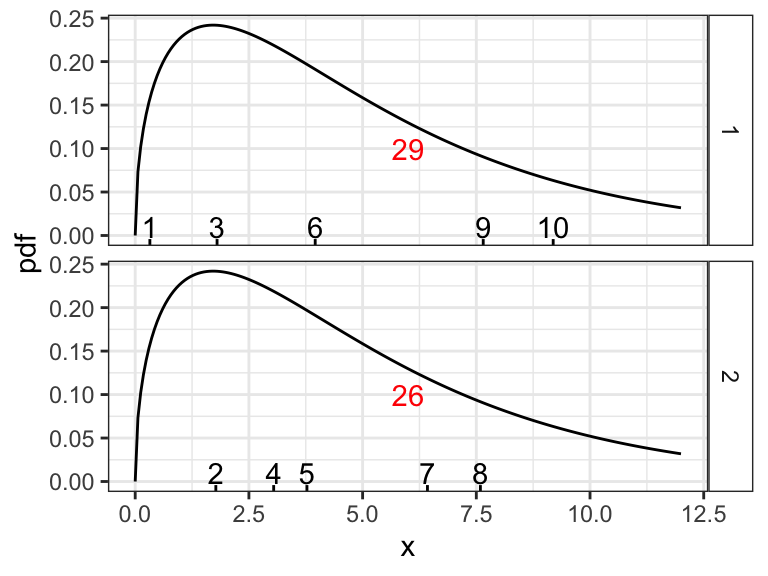
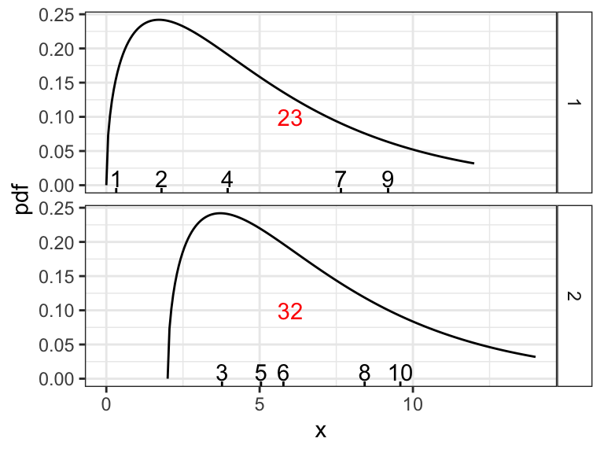
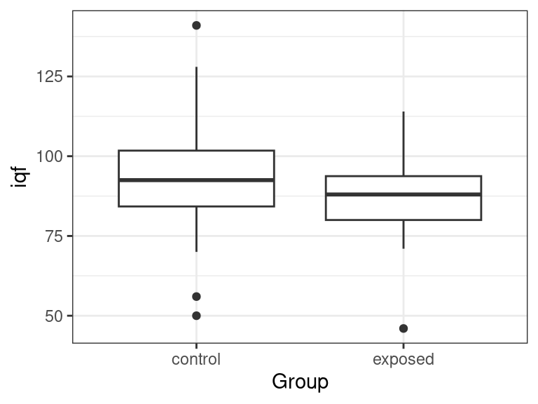
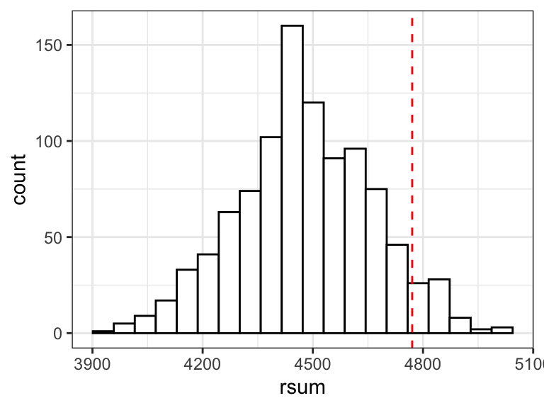

library(tidyverse)
library(broom)
lead <- read_csv("https://dcgerard.github.io/stat_320/data/lead.csv")Two-sample Nonparametric Methods
Consider the study on the effects of lead, described here.
Wilcoxin Rank-sum test (AKA Mann-Whitney \(U\) test)
The Wilcoxin rank-sum test is the nonparametric version of the two-sample \(t\)-test.
The null is that the distributions of the two samples are the same. The alternative is that they are the same except shifted. That is,
- \(X_i \sim F_1\) for \(i = 1,\ldots,n_1\) and \(Y_j \sim F_2\) for \(j = 1,\ldots,n_2\). Here, \(F_1\) and \(F_2\) are the CDF’s of samples 1 and 2, respectively.
- \(H_0\): \(F_1 = F_1\)
- \(H_1\): \(F_1(x) = F_2(x + \Delta)\) for some \(\Delta \neq 0\).
This shift interpretation is only valid if the distributions are about the same but shifted (checkable using histograms). If the distributions vary wildly, the hypothesis test is actually
- \(H_0\): \(P(X > Y) = P(Y > X)\)
- \(H_1\): \(P(X > Y) \neq P(Y > X)\)
The idea of this test is that the rank-sums should be about the same on average (if \(n_1 = n_2\))
set.seed(68) df <- tibble( value = c(rnorm(20), rnorm(20)), group = c(rep(1, 20), rep(2, 20)) ) df |> mutate(rank = rank(value)) |> group_by(group) |> summarize(sum = sum(rank))# A tibble: 2 × 2 group sum <dbl> <dbl> 1 1 413 2 2 407But, if the two distributions differ by some location shift, then the distribution shifted up will have higher ranks on average, and so a larger rank sum.
set.seed(68) df <- tibble( value = c(rnorm(20), rnorm(20, mean = 1)), group = c(rep(1, 20), rep(2, 20)) ) df |> mutate(rank = rank(value)) |> group_by(group) |> summarize(sum = sum(rank))# A tibble: 2 × 2 group sum <dbl> <dbl> 1 1 303 2 2 517Visualization: If the two distributions are the same, the average rankings should be about the same (when \(n_1 = n_2\)). Sample of 5 individuals from each group (rug plot) from distribution whose PDF is plotted. The ranks are the numbers above the rug plots. The rank sum of each sample is in red.

Visualization: If one distribution is shifted, the rankings for the shifted to the right distribution will in general be larger than expected than if the distributions were the same.

We can evaluate if the exposed and the control groups have different distributions of IQF
ggplot(lead, aes(x = Group, y = iqf)) + geom_boxplot()
Use
wilcox.text()to run a Wilcoxin rank-sum test.- Response variable is to the left of the tilde
~ - Grouping variable is to the right of the tilde
data: The data frame that containst hte variables
wilcox.test(iqf ~ Group, data = lead) |> tidy()# A tibble: 1 × 4 statistic p.value method alternative <dbl> <dbl> <chr> <chr> 1 1996. 0.114 Wilcoxon rank sum test with continuity correcti… two.sided- Response variable is to the left of the tilde
The \(p\)-value above was pretty large, so we don’t have evidence of a difference of IQ between the two groups.
Calculate the rank sum statistic using these data. First by hand and then using R.
df <- tibble(
group = c(1, 1, 1, 2, 2, 2),
val = c(80, -36, -83, 63, 79, 93)
)By hand, we have the ranks are: (5, 2, 1, 3, 4, 6)
We add up the first three to get 8
We can also do this in R:
df |>
mutate(rank = rank(val)) |>
group_by(group) |>
summarize(sum = sum(rank))# A tibble: 2 × 2
group sum
<dbl> <dbl>
1 1 8
2 2 13The Wilcoxin rank-sum test is most often used for ordinal data. E.g. consider the Werry-Weiss-Peters scale for hyperactivity (as reported by parents), which goes from 0 for no hyperactivity to 4 for severe hyperactivity. Is there a difference in hyperactivity between the exposed and control groups? Do an EDA and then answer with a formal hypothesis test.
Looks like exposed group is a little higher in the scale on average.
lead |>
filter(!is.na(hyperact)) |>
group_by(Group, hyperact) |>
summarize(n = n()) |>
ungroup() |>
group_by(Group) |>
mutate(prop = n / sum(n))`summarise()` has regrouped the output.
ℹ Summaries were computed grouped by Group and hyperact.
ℹ Output is grouped by Group.
ℹ Use `summarise(.groups = "drop_last")` to silence this message.
ℹ Use `summarise(.by = c(Group, hyperact))` for per-operation grouping
(`?dplyr::dplyr_by`) instead.# A tibble: 8 × 4
# Groups: Group [2]
Group hyperact n prop
<chr> <dbl> <int> <dbl>
1 control 0 24 0.490
2 control 1 20 0.408
3 control 2 3 0.0612
4 control 3 2 0.0408
5 exposed 0 15 0.429
6 exposed 1 14 0.4
7 exposed 2 5 0.143
8 exposed 3 1 0.0286Let’s run the Wilcoxin rank sum test:
wilcox.test(hyperact ~ Group, data = lead, exact = FALSE) |>
tidy()# A tibble: 1 × 4
statistic p.value method alternative
<dbl> <dbl> <chr> <chr>
1 784. 0.465 Wilcoxon rank sum test with continuity correcti… two.sided P-value for group differences is 0.4649, so we don’t have evidence of any group differences.
Permutation Tests
The the distribution of the two groups are indeed the exact same, then hypothetically we could arbitrarily choose which individuals belong to which group and the distribution of the rank sum should be the same.
This is the idea of the permutation test.
You generate a null distribution via:
- Randomly assign group labels to individuals
- Calculate the rank-sum statistic
- Repeat 1 and 2 many many times.
If the null is true, then our observed rank sum statistic should be about the same as the rank sum statistics from this null distribution. So we calculate a \(p\)-value by seeing how extreme our observed rank sum statistic is.
You can randomly assign labels by randomly permuting them with
sample().set.seed(1) lead |> filter(!is.na(iqf)) |> ## always remove NA's first mutate(rank = rank(iqf)) |> select(iqf, rank, Group) -> lead_sub lead_sub |> mutate(new_group = sample(Group)) |> head()# A tibble: 6 × 4 iqf rank Group new_group <dbl> <dbl> <chr> <chr> 1 70 4 control exposed 2 85 40 control control 3 86 46 control control 4 76 15.5 control control 5 84 36 control exposed 6 96 81.5 control controlSo one iteration of generating the null distribution would be to first choose each individual’s group, the calculate the rank sum statistic.
lead_sub |> mutate(new_group = sample(Group)) |> group_by(new_group) |> summarize(rsum = sum(rank)) -> sumdf sumdf$rsum[[1]][1] 4622You can replicate this process with
replicate().rout <- replicate(n = 1000, expr = { lead_sub |> mutate(new_group = sample(Group)) |> group_by(new_group) |> summarize(rsum = sum(rank)) -> sumdf sumdf$rsum[[1]] })Our observed rank-sum statistic is
lead_sub |> group_by(Group) |> summarize(rsum = sum(rank)) -> sumdf robs <- sumdf$rsum[[1]] robs[1] 4770Our observed rank-sum statistic is a little rare:
data.frame(rsum = rout) |> ggplot(aes(x = rsum)) + geom_histogram(bins = 20, color = "black", fill = "white") + geom_vline(xintercept = robs, linetype = "dashed", color = "red")
We can quantify how rare by seeing how many null rank sum statistics are at or above our observed statistic. This is our permutation test \(p\)-value
2 * mean(robs <= rout)[1] 0.12For large \(n\), this will be about the same as the normality approximation from the Wilcoxin rank-sum test:
wilcox.test(iqf ~ Group, data = lead) |> tidy()# A tibble: 1 × 4 statistic p.value method alternative <dbl> <dbl> <chr> <chr> 1 1996. 0.114 Wilcoxon rank sum test with continuity correcti… two.sided